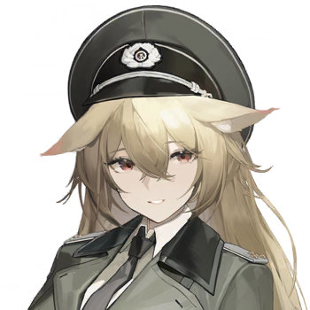
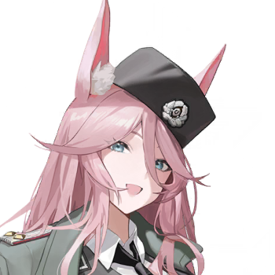
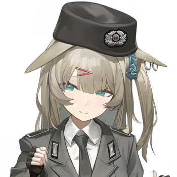
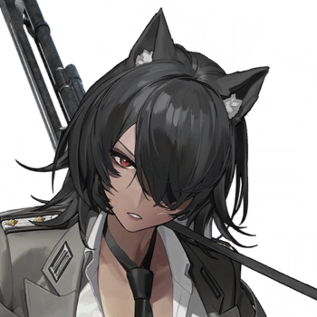
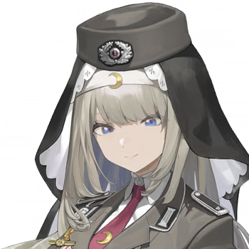
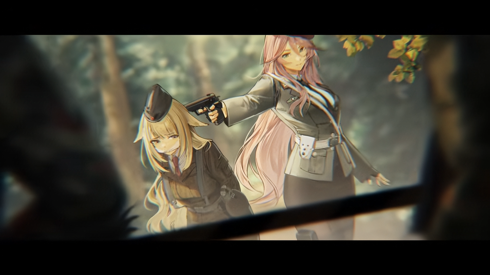

Back to main page :
[Main page]
[Story List]
[Next Chapter]
2-4 Bait
Characters
Warrant Officer

Julius

Felice

Erika

Hannah

Sylvia
Summary
To clear the border guard checkpoints, "Alloy" devised a two-pronged strategy. Sylvia, to cooperate, feigned capture, but what followed threw her into disarray. After interrogating the pilot of the A-10 attack aircraft that had crash-landed, the reconnaissance team finally learned the approximate location of the test base.
[On a montain overlooking a Military airfeilf the 501st and Felice can be seen]
Julius
At that check point, at least 4 people, a truck. That plane there has three people
Julius
It’s too close here, and the checkpoint might be linked to the airport by an alarm system; if we attack the checkpoint directly, they’ll sound the alarm.
[Felice now in her feldjäger uniforme start Speaking]
Felice
Find a spot about a kilometer away and cut the telephone line leading here, any line will do. They run routine checks every thirty minutes; when they find the line is dead, they’ll dispatch a two-person team to inspect it.
Felice
Pick four people to go set an ambush and take them out using suppressed weapons or daggers. Four against two, you should be able to handle it cleanly and quietly, right?
Julius
I see what you mean: with two fewer people near the alarm, the chances of the alarm being triggered decrease. But even so, there are still three people to deal with.
Felice
That's right. I already have a plan to deal with those three, but I need a helper.
Erika
You’re just going to walk across open ground toward the checkpoint like that? Or do you have some clever scout’s trick up your sleeve, something straight out of *FRONT OHNE GNADE*...
Felice
I do indeed have a brilliant plan, but it requires Miss Sylvia's assistance.
Sylvia
Why... does it have to be me?
Erika
Oh dear, it looks like that brilliant scheme of yours is bound to fail; Sylvia is always too hesitant when facing the enemy, so bringing her along would only hold you back.
Sylvia
A scout's mission cannot be accomplished simply by blindly charging ahead; caution and composure are far more important.
Felice
Yes, exactly, I am in need of precisely the kind of caution and composure that Miss Sylvia possesses.
Sylvia
Please tell me what to do.
Felice
Next, I will disguise myself as an enemy military policeman(feldjäger); while pretending to patrol the area, I will capture Miss Sylvia and tie you up to hand you over to the border guards.
Sylvia
Tie me up? ...Wouldn't that leave you all alone to face the enemy?
Felice
As long as the enemy's attention is fully focused on you, I can wipe them all out on my own.
Felice
So, you need to put up a fierce struggle, I’ll ask the enemy to help restrain you, but don’t actually break free and run; if you do, they’ll definitely open fire.
Sylvia
I... I understand.
Felice
Don't worry, I'll tie a slipknot around your wrist. If there's a real emergency, you'll be able to break free easily.
Sylvia
Okay, fine.
Julius
In that case, we’ll go cut the telephone lines and set up an ambush. If the enemy doesn't inspect the lines as we anticipated, abort the mission immediately, regroup, and relocate.
[A truck and several Shmakaldem soldier can be seen going away from the checkpoint]
Felice
They’ve gone to check the lines, and my disguise is complete, now comes the final stage of preparation. Come here, and let me bind you up with care...
[The scene changes back to the Mountain, but this time only Felice and sylvia can be seen]
Sylvia
These ropes were originally meant for binding prisoners, but to my surprise... they were used on me first.
Felice
Oh my, if Miss Sylvia wishes, I could also treat you like a proper captive and show you some real hospitality.
Sylvia
This is no time for jokes... Huh? Does it have to be tied this tightly? I'm having a bit of trouble breathing...
Felice
You mustn't be sloppy; otherwise, the enemy will spot a weakness at a glance.
Felice
Besides, if you wrap it snugly, you can also use Miss Sylvia's shapely figure to draw the enemy's attention.
Sylvia
Gulp... So... is *this* the brilliant scheme devised by General A Bureau?
Felice
Alright, alright, Miss Sylvia, let's practice an emergency escape: lift your arms up like this so your wrists slip out of the ropes. Simple, right?
Sylvia
I've finished practicing.
Felice
Hmm... Oh, right, there's one more thing: I need to gag you.
Sylvia
Gag me ?
Felice
It makes sense to gag the prisoner, and... well, it would be disastrous if you misspoke out of nervousness. It’s better to simply stay silent and let me handle the back-and-forth with the enemy.
Sylvia
O-Okay... Ah~
Felice
As long as you play your part well, everything will go smoothly.
Felice
Rest assured, the enemy is also experiencing real warfare for the first time. Like us, they are ill-equipped to handle complex situations.
[The scene Changes to the checkpoint]
Border Guard A
Stop! This is the Final Warning!
Felice
(Whispering) Stop.
Felice
(Loudly) I will cooperate with your inspection, please don't shoot!
Border Guard B
The two of you, raise your hands and walk over here!
Felice
Sorry! She is a prisoner I captured; her hands are tied. I'm on your side, but I daren't raise my hands right now, she might escape.

Border Guard A
Ah! It's the Feldjager(Military Police)! ...How come there's an Easterner with them? What do we do? Should we go over?
Border Guard B
But we shouldn't stray too far from the checkpoint... We'd better just have them come over here.
Border Guard A
Frauline Hauptmann, what exactly is going on here? Where did this Easterner come from?
Felice
I am not a Feldjager Officier; I am an agent with the National Intelligence Service's counter-espionage division, codenamed "Dax." Here is my ID.
Sylvia
Hmm?
Sylvia
(What is she saying? This isn't the script we agreed on.)
Border Guard A
"Hauptmann Clara Hessen"... she certainly looks the part. But we're dozens of kilometers from the front lines, how did you run into her?
Felice
This was a lure operation: posing as Eastern spies, we sent a message requesting that the enemy dispatch scouts to assist us. We then set a trap to capture them. Our lovely "prey" likely mistook me for one of their own...
Sylvia
Waaah?!!
Sylvia
(What? A trap?!)
Felice
Oh my, our lovely little prey here isn't exactly behaving herself. Could you please help restrain her? It would be a disaster if she managed to escape or signal her accomplices.
Border Guard A
That's easy. You two hold her down!
Sylvia
(Quick, undo the slipknot... I’m going to fight them to the death! As soon as a shot rings out, the Warrant Officer and the others will hear it!)
Sylvia
Huh? ...Mmph!
Sylvia
(I can't lift my arm?! ...When did she tie another rope around me?)
Border Guard A
What? You're saying she has accomplices?
Felice
Of course, she parachuted into the vicinity with an infiltration team. We need to report this to headquarters immediately and hunt down the rest of them.
Border Guard A
That’s really unfortunate, the phone line has been cut. I wonder if this guy’s accomplices are behind it. Why didn't you coordinate with the Bundesgrenzschutz before launching this sting operation?
Felice
In peacetime, one would certainly coordinate with all departments before taking action; but in wartime, everyone is frantically busy, overwhelmed with tasks, and short-staffed, while communication channels are unreliable.
Sylvia
(I'm done for! This, this means I've been completely outmaneuvered, doesn't it? The rope is too tight... I can't breathe...)
Sylvia
(What should I do... Warrant Officer, Company Commander, Hannah... and that idiot...)
Sylvia
Waaaaah...
[Fade too black]
Julius
The MfV scouts really knew their stuff; no alarms were triggered, the enemy was completely wiped out, and we even secured enemy uniforms.
Sylvia
Is teasing me really that much fun?
Felice
You can't blame me for this; it was Miss Sylvia who was too nervous, it was obvious she’d easily give the game away.
Felice
So, the decision was made to have Miss Sylvia immerse herself even more deeply in the role she was to play.
Sylvia
I got too carried away and nearly blacked out, bound so tightly, with my mouth gagged...
Erika
Sylvia didn't hold things back, did she?
Felice
Wow, she's doing really well for a beginner!
Really? I did a good job? Hmm, next time I should team up with the scout, I’m sure I’ll perform even better then.
Really? You did a good job? Hmm, next time I should team up with the scout, I’m sure I’ll perform even better then.
Julius
We’ve secured enemy uniforms, which will aid our infiltration, it would be great if we could use this opportunity to gather more information about the enemy's experimental base.
Felice
About that…… Perhaps that locked up A10 pilot could be our breakthrough.
[The scene changes to a medical ward in what seems to be a prison]
Pilot
Where’s everybody? anybody? When am I getting sent back to base?
Pilot
I thought nobody’s looking after me, can you help me change my posture, my leg is hurt.
Felice
We aren’t nurses, we were asked to investigate this incident.
Warrant Officer
Right, tell us about your incident.
Pilot
My incident? Wait, you two are here to investigate me? This morning I was on the frontline jousting with the enemy Shilka’s(ZSU-23-4) and now you’re treating me with this? , All I did was land on the wrong runway.
Warrant Officer
How did you know there is a runway here?
Pilot
I sortied this morning, when crossing the border at low altitude I saw that there’s a runway here, my plane was hit so I had to land here, it’s not like that’s forbidden right?
Felice
This runway is to be kept in secret, it is not in the list of allowed backup airfields.
Pilot
I was hit, there was no way I could have made it back to Rheindahlen. I wanted to save the plane, and I'm in the wrong?
Felice
Of course you are, loss of a plane is acceptable. Your reckless behaviour may very well expose our secret plan.
Pilot
Fine, bullshit secret plan, I knew this area was a weapon testing ground a long ago.
Felice
Oh, tell me, how did you know about this bullshit secret plan here?
Pilot
You wanna get a hold over me? Not a chance I’m telling you! I was surrounded by a bunch of guards the moment I landed, no way I could have gotten near to the test ground nor did I see anything I wasn’t supposed to.
Pilot
This place had been exposed for a long time, and it’s because there’s nothing on the map around this area. We ain’t stupid, I know about Area 51 and it’s also because the map’s blanked out there.
Felice
What else do you know exactly?
Pilot
Lots of folks from big corpo’s in the bars recently. They’ll run their mouth long as you get them drunk.
Pilot
Some kind of futuristic weapons, mechanical octopus, that kinda stuff. Use to cross exclusion zones. Hehe, I even heard a few things about the stock market, it’ll inflate real soon.
Pilot
……Why are you looking at me like that, you don’t actually think I'm really in here for some kind of spy mission right? What kind of authority do you have to interrogate me anyways?
Pilot
You two are just gate guards, not real agents. I must speak to my superiors.
Pilot
Wait, what are you doing? I'm just…
The wounded pilot was caught off guard and knocked out
Felice
This is the flight map he was using , indeed there is a blank area like he said, but isn’t the area a bit too big?
Warrant Officer
There’s a chart here marking all kinds of no-fire zones, there is a zone forbidding the launch of “Standard” Anti-radiation missiles right here.
Warrant Officer
A10 Attack craft can’t mount anti-radiation missiles, thus he paid no mind to this area……
Felice
……The enemy was concerned the anti-radiation missile may lock onto the test ground’s emission.
Warrant Officer
The anti-radiation missiles range is not far under manual guidance mode , test ground’s perimeter roughly stretches from here, here, here to here..
Felice
Managed to pinpoint their secret hideout’s location at last. Just one problem left, according to this pilot, this place is heavily guarded, the questioning is very strict as well, nobody’s allowed near, it won't be easy to exfil.
Warrant Officer
So you’re suggesting a breakthrough?
Felice
There is a chance, that busted plane lying on the runway, we’ll take care of the maintenance crew around it. Then find parts to repair the radio.
Felice
Once we report the test ground’s coordinates, then we can raise Forward Air Control to conduct bombardment. Wipe out their secret weapon.
Warrant Officer
It won’t matter how heavily guarded it is by then.
[Story List]
[Next Chapter]
{kind=link}